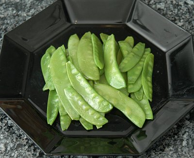

| Zutaten für 4 Personen: | |
| 750 g | Kefen |
| 2 EL | Butter oder Margarine |
| 1/2 TL | Salz |
| 2 Zweige | Petersilie |
Kefen rüsten, von den Fäden befreien, waschen.
Gemüse in der Butter kurz dämpfen. Mit Wasser ablöschen, salzen.
Kefen zugedeckt bei kleiner Hitze 5 - 8 Minuten leise kochen lassen. Pfanne öfter kräftig schütteln, damit die Kefen gleichmässig gar werden. Das Gemüse soll noch hellgrün und knackig sein.
Kefen vor dem Servieren mit fein gehackter Petersilie bestreuen. Statt Butter können auch Specktranchen verwendet werden: der Speck wird in feine Streifchen geschnitten und ca. 5 Minuten glasig gebraten. Gemüse darin dämpfen.
Herbert Eigenmann, Code: KEF
Schmeckt ganz ordentlich als Beilage. RE 5.5.2007
@LINKBACK_TAG@ @WAKELOCK@